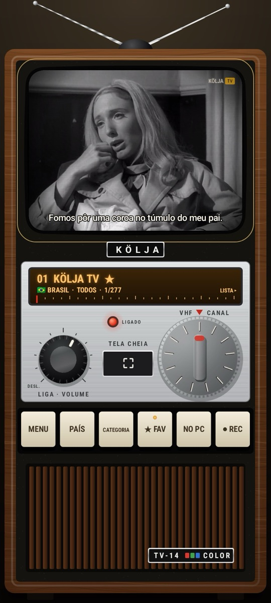
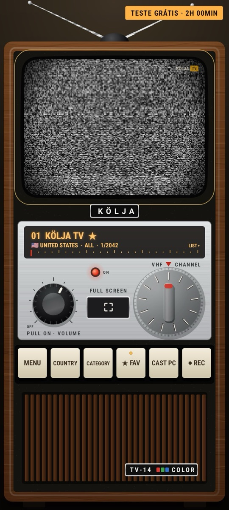
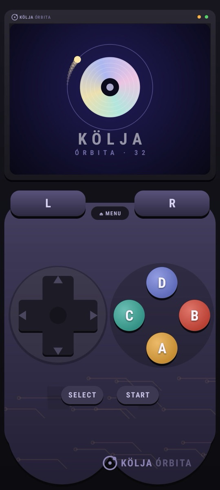
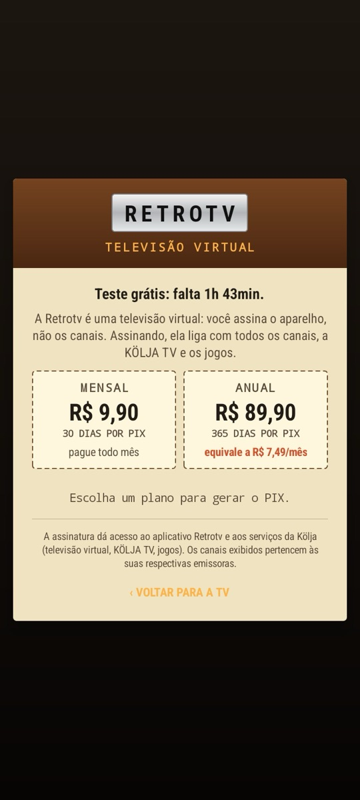

Mensal
R$ 9,9030 dias por PIXApp para Android · versão 0.5.0
Retrotv
Um televisor de madeira dentro do celular. Gire o botão para ligar, troque de canal no seletor e sintonize.
São canais abertos de dezenas de países, separados por país e categoria. O canal 1 é a KÖLJA TV, com filmes clássicos, desenhos e seriados, e legenda em português que você liga e desliga pelo MENU.
Pelo MENU você também entra nos jogos, que rodam nos consoles Kölja dentro do próprio app. Dá para gravar o que está passando no REC e mandar a imagem para o computador pelo botão NO PC.
Baixar APK
Versão 0.5.0 · 1,6 MB · Android 8 ou mais novo
Teste grátis por 2 horas




Duas horas grátis. Depois, você escolhe.
Instale e use à vontade por 2 horas. Para continuar, assine dentro do próprio app: você escolhe o plano, o app gera o PIX e libera sozinho quando o pagamento é confirmado. Não precisa de cadastro nem de cartão.
Anual
R$ 89,90365 dias por PIX · equivale a R$ 7,49/mêsNão há renovação automática. Quando o período acaba, você paga de novo se quiser continuar; se pagar antes do fim, os dias se somam. Os jogos pagos da Kölja Store têm licença própria, vendida à parte.
A assinatura dá acesso ao aplicativo Retrotv e aos serviços da Kölja (televisão virtual, KÖLJA TV, jogos). Os canais exibidos pertencem às suas respectivas emissoras.
Como instalar
- Toque em Baixar APK. Se o navegador perguntar se quer mesmo baixar o arquivo, confirme.
- Abra o arquivo baixado, pela notificação ou pela pasta Downloads.
- Na primeira vez, o Android pede permissão para instalar apps desta fonte. Toque em Configurações, ative Permitir desta fonte e volte.
- Toque em Instalar. Se o Play Protect avisar que não conhece o app, toque em Mais detalhes e depois em Instalar mesmo assim.
- Abra a Retrotv e gire o botão de volume para ligar o televisor.
Perguntas
Falar com a KöljaJá tenho uma Retrotv antiga. Como atualizo?
Baixe o APK desta página e instale por cima. Se o Android disser que o app não foi instalado, desinstale a versão antiga e instale de novo.
O teste grátis pode ser usado de novo?
Não. As 2 horas valem uma vez por aparelho e são contadas pelo nosso servidor, mesmo se você reinstalar o app.
Troquei de celular. Perco a assinatura?
Não. Antes de trocar, anote o código do aparelho em MENU › ASSINATURA / TERMOS, ou guarde o comprovante do PIX. Depois escreva para contato@kolja.com.br e passamos os dias que faltam para o celular novo.
Algum canal não abre. É problema do app?
Nem sempre. Os canais abertos vêm das próprias emissoras, e alguns ficam fora do ar ou só funcionam no país de origem. Se for isso, troque de canal. A KÖLJA TV fica no canal 1.
Preciso de ajuda com um pagamento.
Escreva para contato@kolja.com.br com o código do aparelho (MENU › ASSINATURA / TERMOS) e o comprovante do PIX. Não envie senhas ou dados bancários.